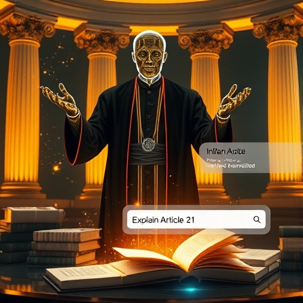
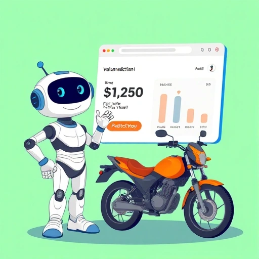
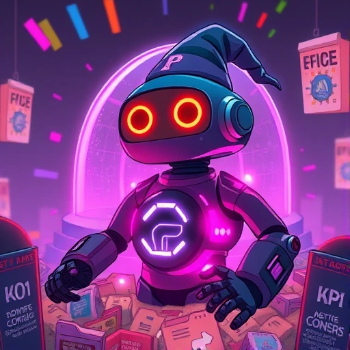
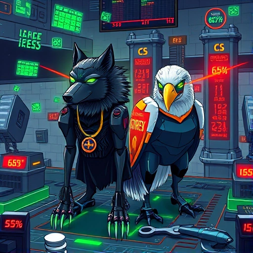

Wasim M Ansari
KI/ML-Lösungsingenieur, spezialisiert auf den Aufbau datenschutzkonformer, skalierbarer KI-Systeme für Unternehmensanwendungen. Ich entwickle DSGVO-konforme modulare KI-Lösungen, die Unternehmen helfen, Effizienzsteigerungen von 25-40% zu erzielen, während strenge Datenschutzstandards eingehalten werden.
Über mich
Ergebnisorientierter KI-Lösungsingenieur mit einzigartigem Hintergrund in Recht und Datenwissenschaft. Ich bin spezialisiert auf die Entwicklung datenschutzorientierter KI-Systeme, die Datenschutzstandards respektieren und gleichzeitig messbaren Geschäftserfolg liefern. Mein juristischer und technischer Hintergrund gewährleistet KI-Lösungen, die nicht nur technisch fundiert, sondern auch ethisch konform und DSGVO-konform sind.
Ich bin spezialisiert auf LLM-Feinabstimmung, RAG-Implementierungen und die Bereitstellung produktionsreifer ML-Modelle. Derzeit absolviere ich eine intensive Ausbildung am IIT Madras in fortgeschrittenen ML/KI-Techniken, mit praktischer Erfahrung in Transformer-Architekturen, Vektordatenbanken und generativen KI-Lösungen. Meine Expertise umfasst PyTorch, TensorFlow und das Hugging Face-Ökosystem für den Aufbau skalierbarer KI-Anwendungen.
Wichtige Erfolge
- Entwicklung von Hochleistungs-KI-Systemen mit 35% Kostenreduzierung und 2-facher Durchsatzverbesserung
- Entwicklung und Bereitstellung von über 10 produktionsreifen KI-Lösungen mit verteiltem Fokus auf verschiedene Abteilungen
- Aktiver Beitrag zur KI-Community durch technische Artikel und Diskussionen auf LinkedIn, mit Fokus auf aufkommende KI-Technologien
- Top-5%-Kaggle-Ranking in einer nationalen Cybersecurity- Erkennungsherausforderung, organisiert vom IIT Madras
Ausgewählte Projekte
-
 Problem: Patienten, die aus Krankenhäusern entlassen werden, haben oft Schwierigkeiten, ihre medizinische Versorgung zu Hause zu verwalten, da ihnen personalisierte Anleitung und einfacher Zugang zu genauen medizinischen Informationen fehlen.
Problem: Patienten, die aus Krankenhäusern entlassen werden, haben oft Schwierigkeiten, ihre medizinische Versorgung zu Hause zu verwalten, da ihnen personalisierte Anleitung und einfacher Zugang zu genauen medizinischen Informationen fehlen.
Lösung: Implementierung eines produktionsreifen Multi-Agent-KI-Chatbots mit LangGraph, der intelligentes Routing, RAG-gestützte Wissensabfrage und Echtzeitwebsuche kombiniert.
Auswirkung: 24/7 intelligente medizinische Unterstützung mit 95%+ Testabdeckung und vollständiger Datenschutz durch PHI/PII-bewusstes Design.
Hauptfunktionen: Multi-Agent-System, RAG-Pipeline mit FAISS, Echtzeit-Websuche, LangSmith-Tracing, Token-Streaming, Modern Web UI.
Tech Stack: Python, FastAPI, LangChain, LangGraph, Mistral AI, FAISS, Docker, Google Cloud Run. -
 Problem: Medizinische Wissensdatenbanken brauchen eine nahtlose Integration mit KI-Tools wie Claude Desktop oder benutzerdefinierten MCP-Clients, während Mehrbenutzerzugriff mit Enterprise-Sicherheit unterstützt werden muss.
Problem: Medizinische Wissensdatenbanken brauchen eine nahtlose Integration mit KI-Tools wie Claude Desktop oder benutzerdefinierten MCP-Clients, während Mehrbenutzerzugriff mit Enterprise-Sicherheit unterstützt werden muss.
Lösung: Aufbau eines produktionsreifen MCP- Servers (Model Context Protocol) mit HTTP/SSE-Transport, der medizinisches Wissen bereitstellt und gleichzeitige Nutzer über Sitzungsmanagement und umfassendes Monitoring verwaltet.
Auswirkung: Ermöglicht Claude-Desktop- und Custom-Client-Nutzern den Zugriff auf spezialisierte nephrologische Informationen, mit horizontaler Skalierung für mehrere gleichzeitige Nutzer und voller Beobachtbarkeit.
Hauptfunktionen: MCP-Server mit HTTP/SSE- Transport, Multi-User-Session-Management, CORS-Unterstützung, horizontale Skalierung und produktionsreifer Bereitstellung (Docker, Cloud Run).
Tech Stack: Python, FastAPI, MCP Protocol, FAISS Vector Store, Mistral AI, Docker, Google Cloud Run. -
Problem: Unternehmen haben Schwierigkeiten, unstrukturierte Daten aus verschiedenen PDF-Dokumenten (Rechnungen, Verträge, Berichte, Formulare) zu extrahieren und zu strukturieren, was zu manueller Dateneingabe, Fehlern und Ineffizienz führt.
Lösung: Entwicklung eines KI-gestützten Dokumentenverarbeitungssystems, das relevante Felder per LLM- Analyse dynamisch erkennt, Batch-Extraktion in einem einzigen API-Aufruf durchführt und strukturierte Excel-Dateien mit Qualitätsmetriken erzeugt.
Auswirkung: Reduziert die Verarbeitungszeit um 80% bei null hartcodierten Schemata, flexibler Verarbeitung und automatischer Anpassung an neue Datenstrukturen ohne Code- Änderungen.
Hauptfunktionen: Dynamische Schemaerkennung, Batch-Verarbeitung, PDF-Typ-Erkennung, REST API mit Job- Polling, Qualitätssicherung (BLEU-Werte und Coverage-Metriken), interaktive Web-Oberfläche, Excel-Export.
Tech Stack: Python, FastAPI, Mistral AI, LangChain, openpyxl, PyPDF2, Docker, Google Cloud Run. -
Problem: Entwickler haben oft Schwierigkeiten, große Bibliotheks- und API-Dokumentationen zu durchsuchen, wenn sie nur ein präzises Codebeispiel oder Nutzungsmuster benötigen.
Lösung: Implementierung eines temporären In-Memory-Vektorspeichers mit Chunking für sofortigen Abruf, kombiniert mit RAG und von LLM generierten Antworten, um präzise Code-Snippets und Nutzungshinweise auf Abruf zu liefern.
Auswirkung: Beschleunigte Entwickler-Workflows durch gezielte Codebeispiele und kürzere Zeit bis zur ersten funktionsfähigen Integration für häufige Anwendungsfälle.
Hauptfunktionen: Intelligenter Chat mit LLM, PDF- und Web-Inhaltsanalyse, Chunking und In-Memory- Vektorspeicher, Echtzeit-Abruf, kontextbezogene Code-Snippets.
Tech Stack: Python, FastAPI, LangChain, Mistral AI, InMemoryVectorStore, Modern HTML/CSS/JS, Docker, Google Cloud Run. -
Problem: Viele Nutzer müssen sich für Bildgenerierungstools anmelden und es fehlt an API-gesteuerter Automatisierung, was die Integration in Content-Pipelines und CI-Workflows erschwert.
Lösung: Entwicklung einer produktionsreifen Bildgenerierungsplattform mit REST-API-Endpunkten neben einer intuitiven Benutzeroberfläche, unter Verwendung von Diffusionsmodellen für interaktive und automatisierte Nutzung.
Auswirkung: Optimierte Automatisierung und Integration für Design- und Content-Workflows, inklusive headless Batch-Generierung und schnellerer Time-to-Content für Teams und CI/CD-Pipelines.
Hauptfunktionen: Text-zu-Bild-Generierung, REST-API für Automatisierung, Unterstützung mehrerer Modelle, Batch- und geplante Generierung, benutzerdefinierte Bildeinstellungen, schnelle Verarbeitung, sofortige Downloads.
Tech Stack: Python, FastAPI, Azure Web Apps, Hugging Face Diffusers, PIL, Docker. -
Problem: Viele Chatbots sind übermäßig höflich und standardisiert. Manchmal wünschen sich Nutzer Humor, Sarkasmus oder eine frechere Persona für unterhaltsamere Interaktionen statt eines streng formalen Assistenten.
Lösung: Implementierung eines kontextbewussten Chatbots mit Streaming-Antworten und einer bewusst frechen, humorvollen Persönlichkeit, um lebendige, ansprechende Gespräche zu erzeugen.
Auswirkung: Demonstrativer Prototyp für das Design konversationeller Personas und Streaming-Interaktionen, geeignet für Demos und Experimente.
Hauptfunktionen: Streaming-Antworten, personenbezogene Antworten (frech und humorvoll), persistentes Gedächtnis, Thread-Konversationen, Kontextbewusstsein.
Tech Stack: Python, Mistral AI, LangGraph, Streamlit, Docker. -
Problem: COVID-19 schuf einen Bedarf an automatisierter Überwachung der Maskenpflicht in öffentlichen Räumen.
Lösung: Transfer-Learning-Ansatz mit VGG16-Architektur für die Echtzeit-Maskenerkennung mit Dreiklassen-Klassifikation.
Auswirkung: 95% Genauigkeit in der Echtzeit-Maskenerkennung und damit effiziente Überwachung von Sicherheitsprotokollen.
Hauptfunktionen: Echtzeit-Erkennung, Dreiklassen-Klassifikation, Transfer Learning, Datenaugmentation, Modell-Feinabstimmung.
Tech Stack: Python, PyTorch, VGG16, OpenCV, NumPy, Matplotlib. -
Problem: Die manuelle Kalenderverwaltung ist mühsam und zeitaufwendig. Inspiriert von Alexa und Siri wollte ich einen Konversationsagenten bauen, der meinen Kalender per natürlicher Sprachsteuerung verwaltet.
Lösung: Implementierung von Google OAuth für sicheren Zugriff auf persönliche Kalenderdaten und Aufbau eines sprachgesteuerten Assistenten für Terminplanung und Erinnerungen.
Auswirkung: Demonstriert die Machbarkeit einer sprachbasierten Kalenderverwaltung für die persönliche Produktivität.
Hauptfunktionen: Sprach- und Texteingabe, Google Calendar Integration (OAuth), intelligentes Matching von Ereignissen, Klärungs-Workflow, Datenschutz und Sicherheit, moderne Benutzeroberfläche.
Tech Stack: FastAPI, LangGraph, LangChain, Google Calendar API, SpeechRecognition, pydub, gTTS, Bootstrap, FullCalendar. -

Problem: Anwälte brauchen einen zentralen Ort für gründliche Recherche und Präzedenzfallsuche, während Mandanten oft schnelle, kostenlose rechtliche Orientierung zu ihren Fällen wünschen.
Lösung: Implementierung eines RAG-Systems, das den Vector Store und Online-Regierungsdatenbanken nach Fallrecht durchsucht und sofort relevante Ergebnisse liefert. Es werden keine Nutzerdaten erfasst, was Datenschutz und Sicherheit gewährleistet.
Auswirkung: Optimierte juristische Recherche und kostenlos zugängliche, datenschutzfreundliche Rechtsinformationen für Fachleute und Öffentlichkeit.
Hauptfunktionen: Sofortige Rechtseinblicke, KI-gestützte Suche, Fokus auf indisches Recht, Regierungsdatenbank-Scraping, transparente Zitate, keine Datenerfassung.
Tech Stack: Python, FastAPI, Streamlit, ChromaDB, MistralAI, LangChain, TavilySearch, PyPDF2, BeautifulSoup4, Docker. -
Problem: Bewerber haben oft Schwierigkeiten, maßgeschneiderte, realistische Übungsfragen und verwertbares Feedback für ihre Zielrolle zu finden.
Lösung: Entwicklung eines KI-gestützten Assistenten, der individuelle Mock-Interviews und ausführliche Antworten mit Mistral AI generiert und echte Interviewszenarien simuliert.
Auswirkung: Über 100 Nutzer konnten ihre Interviewfähigkeiten und ihr Selbstvertrauen durch gezielte, interaktive Übungssessions verbessern.
Hauptfunktionen: Individuelle Fragengenerierung, detaillierte Antworten, progressive Schwierigkeit, mehrere Themen, sofortiges Feedback, benutzerfreundliche Oberfläche.
Tech Stack: Streamlit, Python, Mistral AI, Custom CSS. -

Problem: Käufer und Verkäufer auf dem Gebrauchtmotorradmarkt haben mit Unsicherheit und Ineffizienz zu kämpfen, weil zuverlässige Preisprognosen und datengetriebene Werkzeuge fehlen.
Lösung: Erstellung eines ML-gestützten Preisvorhersagemodells mit fortgeschrittenen Ensemble-Modellen und Feature Engineering, um präzise und faire Marktwerte zu liefern.
Auswirkung: 92% Genauigkeit bei der Preisvorhersage, wodurch Nutzer fundierte Entscheidungen treffen und besser verhandeln können.
Hauptfunktionen: Genaue Preisvorhersage, KI-gesteuerte Einblicke, benutzerfreundliche Oberfläche, smarte Rückmeldungen, Markt-Kontextanalyse.
Tech Stack: Streamlit, Python, Scikit-learn, XGBoost, ColumnTransformer. -

Problem: Gebaut für einen IIT-Madras-Wettbewerb, bei dem 10 Data-Analysis- und Coding-Probleme in nur 30 Minuten gelöst werden mussten.
Lösung: Entwicklung eines automatisierten Aufgabenlösers, der alle Aufgaben autonom bearbeitete und eine A+ Note erzielte.
Auswirkung: Demonstration der Leistungsfähigkeit autonomer KI-Agenten im Wettbewerbs-Coding und in der Daten- analyse, mit Top-Bewertungen unter Zeitdruck.
Hauptfunktionen: KI-generierte Code-Ausführung, Multi-Format-Dateiverarbeitung, Selbst-Debugging-Workflow, sichere Sandbox-Umgebung.
Tech Stack: Python, FastAPI, Mistral API, Pandas, pdfplumber, Docker. -
Problem: Viele Nutzer wünschen sich eine zuverlässige, cloud-native Plattform zum Erstellen und Teilen von Fotojournalen, aber bestehende Lösungen mangeln oft an Skalierbarkeit und nahtlosem Speicher.
Lösung: Entwurf und Demonstration einer serverlosen Fotojournal-App auf Google Cloud Run, die verwaltete Speicher- und Datenbankdienste für einen robusten, wartungsarmen Betrieb integriert.
Auswirkung: 99,9% Verfügbarkeit und mühelose Skalierung, sodass Nutzer Fotojournale ohne Wartungsaufwand hochladen, ansehen und teilen können.
Hauptfunktionen: Bild-Uploads, Mehrbenutzer-Unterstützung, chronologischer Feed, cloud-native Architektur.
Tech Stack: Flask, Google Cloud SQL, Google Cloud Storage, Google Cloud Run, HTML + CSS. -
Problem: Content-Plattformen kämpfen mit der Erkennung doppelter Fragen und der semantischen Ähnlichkeitsanalyse.
Lösung: Entwicklung eines ML-gestützten Textähnlichkeitssystems mit Word2Vec und XGBoost für eine präzise Duplikaterkennung.
Auswirkung: 88% Genauigkeit bei der Duplikaterkennung, wodurch die Moderationszeit deutlich reduziert wurde.
Hauptfunktionen: Semantische Ähnlichkeitsanalyse, Konfidenzwertung, Historienprotokollierung, intelligente ML-Pipeline, modernes Dark-UI.
Tech Stack: Python, Flask, XGBoost, Word2Vec, Docker, HTML + CSS. -

System-Bedrohungsvorhersage (Kaggle Top 5%) [Kaggle]Problem: Kaggle-Wettbewerb vom IIT Madras zur Entwicklung eines ML-Modells für Bedrohungserkennung.
Lösung: Entwicklung einer Ensemble-Technik für Top 5% Platzierung.
Auswirkung: Demonstration fortgeschrittener ML-Experimentierung.
Hauptfunktionen: Feature Engineering, Ensemble-Modellierung, Kaggle-Wettbewerbsranking.
Tech Stack: Python, Random Forest, XGBoost, Pandas, Scikit-learn.
Berufserfahrung
-
Praktikant für KI/ML-Ingenieurwesen —
TechPranee (SpearHub) · Remote
• Arbeit an angewandten KI/ML-Projekten in einer Startup- Umgebung und Beitrag zur Entwicklung intelligenter Automatisierung und datengetriebener Lösungen.
• Einsatz praktischer Erfahrung mit LLMs, LangChain/LangGraph und RAG-Pipelines für produktionsreife Funktionen und Prototypen.
• Zusammenarbeit mit verschiedenen Fachbereichen, um Geschäftsanforderungen in skalierbare KI-Lösungen zu übersetzen. -
KI/ML-Ingenieur & Lösungsentwickler —
Freiberuflich / Unabhängige Projekte (Dehradun, Indien)
• Absolviere das IIT Madras Diplom in Datenwissenschaft und lerne intensiv fortgeschrittene Themen, mit besonderem Interesse an Transformer-Architektur, Reinforcement Learning und Cloud-Diensten.
• Entwickelte und implementierte mehrere End-to-End KI/ML-Anwendungen, von prädiktiver Modellierung bis hin zu Konversations-KI und rechtlichen Assistenzsystemen.
• Lieferte produktionsreife Implementierungen mit Docker, FastAPI, Flask, Streamlit und Google Cloud/Azure.
• Erreichte Top 5% Kaggle-Ranking in einer Cybersecurity-Detection-Challenge.
• Baue aktiv ein vielfältiges Projektportfolio auf, das Anpassungsfähigkeit und technische Tiefe demonstriert. -
Einzelhandelsleiter — AHAAN LIMITED
(Kingston Upon Hull, UK)
• Leitung von Maßnahmen zur operativen Exzellenz und Compliance über mehrere Standorte hinweg, mit 20% Umsatzwachstum durch Verkaufsplanung, Bestandsoptimierung und bessere Kundenerfahrung.
• Einführung datenbasierter Entscheidungen durch statistische Lösungen für dynamische Preisstrategien und Nachfrageprognosen, was die Lagerengpässe um 15% reduzierte. -
Import-Export-Unternehmer — AHLAN
EXPORTS (Dehradun, Indien)
• Management von internationalen B2B-Logistikprozessen und regulatorischer Compliance in mehreren Ländern, ergänzt durch automatisierte digitale Marketing-Funnels, die die Reichweite um 40% erhöhten.
• Nutzung von Datenanalysen zur Optimierung der Lieferkette und Markttrend-Analyse, wodurch die Logistikkosten um 25% gesenkt wurden. -
Immobilienberater — FAHZAM PROPERTIES
(Dubai, VAE)
• Verwaltung von Immobilienportfolios im Wert von über AED 50M und Unterstützung komplexer rechtlicher Freigaben als zertifizierter RERA-Broker.
• Entwicklung von Marktanalyseberichten und Bewertungsmodellen, die zu erfolgreichen hochpreisigen Transaktionen führten. -
Rechtsreferent — QUISLEX LEGAL
SERVICES (Hyderabad, Indien)
• Leitung von Dokumentenprüfteams für komplexe Litigation- Support-Projekte mit mehr als 10.000 Dokumenten pro Monat und 99% Genauigkeit.
• Einführung standardisierter Datenentdeckungs- und Berichtsprotokolle, wodurch die Bearbeitungszeit um 30% sank. -
Associate Attorney — MINDCREST INDIA
PVT LTD (Hyderabad, Indien)
• Unterstützung bei Rechtsrecherche, Vertragsentwürfen und Dokumentenprüfung für Unternehmens- und Rechtsstreitigkeiten.
• Erwerb fundierter Erfahrung in strukturierter Rechtsanalyse und grenzüberschreitender Compliance.
Ausbildung
-
Diplom in Datenwissenschaft
Kursinhalte: ML, DL, GenAI, Lineare Algebra, Statistik, Business Analytics, Tools für Data Science, Abschlussprojekte.
Note: CGPA 8+
Projekte: System Threat Forecaster (Top 5% bei Kaggle), Assignment AI Agent -
Bachelor of Laws (LLB, 5-jähriges Studium)
Kursinhalte: Verfassung, Zivil- und Strafrecht, Verfahrensrecht, IPR, Bankrecht, Umweltrecht, Drafting.
Erfolge: Teilnahme am 1. Studentenparlament, Moot-Court- Wettbewerbe.
Zertifizierungen
- Microsoft Azure AI Essentials - Microsoft (2025)
- Understanding Google Cloud Platform – IIT Madras (2025)
- Google Digital Marketing - Google (2020)
- Digital Marketing – Codestar & Udemy (2020)
- Immobilienmakler – Dubai Real Estate Institute (2015)
Sprachen
- Englisch — IELTS 7 Band (CEFR Level C1)
- Urdu — Muttersprache (CEFR Level C2)
- Hindi — Muttersprache (CEFR Level C2)
- Deutsch — Grundkenntnisse (CEFR Level A1) - Lerne derzeit
Publikationen & Fachbeiträge
-
Halluzinationen in der KI-Rechtsrecherche: Der Albtraum eines
Juristen?
— LinkedIn-Artikel
Artikel über KI-Halluzinationen in der juristischen Recherche, der Risiken fabrizierter Fälle und die Bedeutung präziser Prompts hervorhebt. -
Anpassung von Exportstrategien für indische handgefertigte
Teppiche
— Medium-Artikel
Datenbasierte Exportstrategie für die indische Teppichindustrie mit Marktchancen-Scoring und Wettbewerbs-Benchmarking.